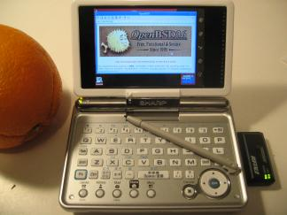

![[OpenBSD]](images/smalltitle.gif)
OpenBSD/zaurus

OpenBSD/zaurus is an effort to make OpenBSD run on several PDAs of the
Sharp Zaurus family. Initially targeted is the C3000 model which contains a
4GB CF hard drive internally.
A mailing list for ARM-based ports is available at
arm@openbsd.org.
To join the OpenBSD/arm mailing list, send a message body of
"subscribe arm" to
majordomo@openbsd.org.
Please be sure to check our mailing list policy before
subscribing.
The current port maintainer is Dale Rahn
(drahn@openbsd.org).
Others are definitely welcome to contribute!
Table of contents
History:
Shortly after Sharp unveiled its first Zaurus machines, some OpenBSD developers
started dreaming of running OpenBSD on it, to have the smallest possible
ssh-capable machine!
After the OpenBSD/cats was completed in order to benefit
from a good ARM development platform, work on the Zaurus hardware started in 2004.
Since the Zaurus is a fully capable machine, we no longer cross compile. All
builds of Zaurus (and even the shared "arm" packages) are done on the Zaurus directly.
Current status:
As the port is still in its early stages, development is pretty hectic at the
moment.
The Zaurus boots multiuser, X11 runs, and device support is being
constantly improved.
Most PCMCIA/CF devices work (such as wireless/ethernet cards), as well
as host USB, and the keyboard and touch screen are supported by X11.
Audio is mostly working, and the machine is of course able to suspend
much like a regular laptop.
Projects (in no particular order):
- Audio mixer support (internal speaker works).
- pcmcia(4) com(4) support.
- Repair pcmcia issues that are causing "white-out" problems with some devices.
- Fix the odd suspend crashing bugs.
- Support 100Mbit full-duplex
(ne)
ethernet cards.
- SD/SDIO support.
- C860 support.
- C1000 support.
Supported hardware:
At the moment, the following Zaurus models and devices are supported:
- Zaurus SL-C3000
- Standard and infrared serial ports
(com)
*
- LCD display panel
(lcd)
(* text mode turned horizontal after 3.7 release)
- Touch screen
(zts)
- Native keyboard
(zkbd)
- PCMCIA slot
(pxapcic)
- On-board microdrive
(wd)
- USB controller
(ohci)
- Power management and suspend
(apm)
- Sound chip
(zaudio) *
USB Devices (on the C3000 only)
- ADMtek AN986-based USB adapters (aue),
including:
- 3Com 3c460b
- Abocom UFE1000
- Abocom DSB650TX
- Accton USB320-EC
- Accton SpeedStream Ethernet
- Admtek Pegasus
- Admtek Pegasus II
- AEI USB Fast Ethernet
- Allied Telesyn AT-USB100
- ATEN UC-110T
- Belkin USB to LAN
- Billionton Systems USB100
- Billionton Systems USB100EL
- Billionton Systems USB100LP
- Billionton Systems USBE100
- Corega FEther USB-TX
- Corega FEther USB-TXS
- D-Link DSB-650
- D-Link DSB-650TX
- D-Link DSB-650TX-PNA
- ELCON Systemtechnik Goldpfeil P-LAN
- Elecom LD-USB/TX
- Elecom LD-USBL/TX
- Elsa Microlink USB2Ethernet
- GIGABYTE GN-BR402W
- Hawking UF100
- HP HN210E
- I/O DATA USB ETTX
- Kingston KNU101TX
- Laneed LD-USBL/TX
- LinkSys USB100TX
- LinkSys USB100H1
- LinkSys USB10T
- LinkSys USB10TA
- LinkSys USB10TX
- Melco Inc. LUA-TX
- Melco Inc. LUA2-TX
- Microsoft MN110
- Mobility EasiDock Ethernet
- Netgear FA101
- Omnidirectional Control Technology USB TO Ethernet
- Siemens SpeedStream USB
- Smartbridges smartNIC 2
- SMC 2202USB
- SMC EZ Connect USB
- SOHOware NUB100
- SOHOware NUB110
- ASIX Electronics AX88172 USB adapters (axe),
including:
- ATEN UC210T
- Billionton Systems USB2AR
- Buffalo (MELCO) LUA-U2-KTX
- Corega FEther USB2-TX
- D-Link DUB-E100
- Hawking UF200
- Intellinet USB 2.0 to Ethernet (rev A)
- JVC MP-PRX1
- LinkSys USB200M
- Netgear FA120
- Sitecom LN-029
- SnapPort USB 2.0 LAN Adapter
- ST Lab USB 2.0 Fast Ethernet
- Surecom EP-1427X-2
- System TALKS SGC-X2UL
- TRENDnet TU2-ET100
- Atmel AT76C50x based USB 802.11b adapters
(atu), including:
- 3Com 3CRSHEW696
- AboCom BWU613
- Accton 2664W
- Acer Peripherals AWL300
- Acer Peripherals AWL400
- Actiontec 802UAT1
- Addtron AWU120
- Aincomm AWU2000B
- Askey Computer Voyager 1010
- Askey Computer WLL013 (Intersil Radio)
- Askey Computer WLL013 (RFMD Radio)
- Atmel AT76C503 (Intersil Radio)
- Atmel AT76C503 (RFMD Radio)
- Atmel AT76C505 (RFMD Radio)
- Atmel AT76C505 (RFMD 2958 Radio)
- Atmel AT76C505A (RFMD 2958 Radio)
- Atmel AT76C505AS (RFMD 2958 Radio)
- Belkin F5D6050
- Bluetake BW002
- Compaq iPAQ h54xx/h55xx Internal WLAN
- Conceptronic C11U
- Conceptronic WL210
- Corega WLAN USB Stick 11
- Dick Smith Electronics CHUSB 611G
- Dick Smith Electronics WL200U
- Dick Smith Electronics WL240U
- Dick Smith Electronics XH1153
- D-Link DWL-120 rev E
- Geowave GW-US11S
- Gigabyte GN-WLBM101
- Gigaset WLAN
- Hewlett-Packard HN210W
- Intel AP310 AnyPoint II
- I/O DATA USB WN-B11
- Lexar 2662W-AR
- Linksys WUSB11 802.11b
- Linksys WUSB11 802.11b v2.8
- MSI WLAN
- Netgear MA101
- Netgear MA101 rev B
- Ovislink AirLive WL-1120USB
- OvisLink AirLive WL-1130USB
- Planex Communications GW-US11S
- Samsung SWL2100W
- Siemens WLL013
- SMC EZ Connect 11Mbps (SMC2662w)
- SMC EZ Connect 11Mbps v2 (SMC2662wV2)
- Tekram U-300C
- W-Buddie WN210
- Z-Com M4Y-750
- USB Host-to-Host Communication Devices (cdce)
- CATC USB-EL1210A-based USB adapters (cue),
including:
- Belkin F5U111
- CATC Netmate and Netmate II
- SmartBridges SmartLink
- Kawasaki LSI KL5KUSB101B-based USB adapters (kue),
including:
- 3Com 3c19250
- 3Com 3c460 HomeConnect
- AboCom Systems URE450 Ethernet
- ADS Technologies USB-10BT
- Aox USB101
- Asante USB to Ethernet
- ATen DSB-650C
- ATen UC10T
- Corega USB-T
- D-Link DSB-650C
- Entrega NET-USB-E45
- I/O Data USB-ET/T
- Jaton USB XpressNet
- Kawasaki USB101
- Kingston Ethernet
- LinkSys USB10T
- Mobility Ethernet
- Netgear EA101
- Peracom USB
- Portgear Ethernet
- Portsmith Express Ethernet
- Psion Dacom Gold Port Ethernet
- Shark Pocket Adapter
- Silicom U2E
- SMC 2102USB
- SMC 2104USB
- Davicom DM9601 USB Ethernet adapters (udav),
including:
- USB Keyboards (ukbd)
- USB Mass Storage devices, i.e., USB floppy drives and USB memory stick
controllers (umass)
- USB-USB cables (upl)
- Ralink RT2500 based USB 2.0 802.11b/g adapters (ural), including:
*
- AMIT WL532U
- ASUS WL-167g
- Buffalo WLI-U2-KG54-AI
- CNet CWD-854
- Compex WLU54G
- Conceptronic C54RU
- D-Link DWL-G122 (b1)
- E-Tech WGUS02
- Gigabyte GN-WBKG
- Linksys WUSB54G v4
- Linksys WUSB54GP v4
- MSI MS-6861
- MSI MS-6865
- MSI MS-6869
- Repotec RP-WU0402
- Surecom EP-9001-g
- Zinwell ZWX-G261
- Realtek RTL8150L based USB adapters (url),
including:
- Abocom RTL8151
- GreenHouse GH-USB100B
- GreenHouse GH-USB100B with HomePNA
- Linksys USB100M
- Longshine LCS-8138TX
- Melco Inc. LUA-KTX
- Micronet SP128AR
- SMC 2208USB/ETH
- TrendNet TU-ET100C
- Zt USB10/100
- Intersil PRISM 2.5/3 based USB 802.11b adapters
(wi)
- Acer Warplink USB-400
- Actiontec HWU01170
- AirVast WM168b
- Ambit WLAN
- Apacer Wireless Steno MB112
- ASUS WL-140
- Compaq W100
- Corega WLUSB-11
- Corega WLUSB-11 Key
- D-Link DWL-120 (rev F)
- D-Link DWL-122
- I-O DATA WN-B11/USB
- Intel PRO/Wireless 2011B
- Intersil Prism 2X
- JVC MP-XP7250
- Linksys WUSB11 v3.0
- Linksys WUSB12
- Melco WLI-USB-KB11
- Melco WLI-USB-KS11G
- Melco WLI-USB-S11
- Microsoft MN510
- Netgear MA111 (version 1 only)
- Pheenet WL-503IA
- Planex GW-US11H
- Siemens SpeedStream SS1022
- Sitecom WL-022
- Syntax USB-400
- US Robotics 1120
- Z-Com XI-725/726
- Z-Com XI-735
- ZyXEL ZyAIR B-200
PCMCIA/CF Devices
- CF Mass Storage devices
- Most Compact Flash cards and CF Microdrives.
(wd)
- NE2000 compatible CF Ethernet adapters
(ne)
- Billionton Systems CFLT2-10N
- Buffalo LPC-CF-CLT
- Tamarack TC3299CE
- Intersil PRISM-2-3 based 802.11b Compact Flash adapters
(wi)
- ASUS WL-110
- Buffalo AirStation
- D-Link DCF-660W
- ELSA XI800
- Linksys WCF12
- Netgear MA701
* Support added after 3.7.
Getting and installing OpenBSD/zaurus:
There is no official OpenBSD/zaurus release yet.
Snapshots are made available from time to time, in
this location
as well as in a few
mirrors.
Here are the
OpenBSD/zaurus snapshot installation instructions
as well.

www@openbsd.org
$OpenBSD: zaurus.html,v 1.35 2005/05/10 01:57:00 uwe Exp $
{kind=link}